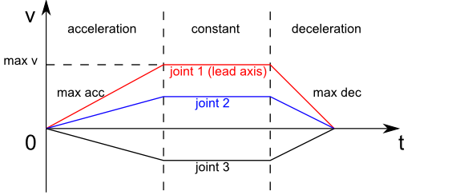

Pilz Industrial Motion Planner
pilz_industrial_motion_planner provides a trajectory generator to plan standard robot
motions like point-to-point, linear, and circular with MoveIt.
By loading the corresponding planning pipeline
(pilz_industrial_motion_planner_planning_planner.yaml in your
*_moveit_config package), the trajectory generation
functionalities can be accessed through the user interface (C++, Python
or RViz) provided by the move_group node, e.g.
/plan_kinematic_path service and /move_action action.
For detailed usage tutorials, please refer to
MoveItCpp Tutorial and
Move Group C++ Interface.
Joint Limits
The planner uses maximum velocities and accelerations from the
parameters of the ROS node that is operating the Pilz planning pipeline.
Using the MoveIt Setup Assistant the file joint_limits.yaml
is auto-generated with proper defaults and loaded during startup.
The specified limits override the limits from the URDF robot description.
Note that while setting position limits and velocity limits is possible
in both the URDF and a parameter file, setting acceleration limits is
only possible using a parameter file. In addition to the common
has_acceleration and max_acceleration parameters, we added the
ability to also set has_deceleration and max_deceleration(<0.0).
The limits are merged under the premise that the limits from the node parameters must be stricter or at least equal to the parameters set in the URDF.
Currently, the calculated trajectory will respect the limits by using the strictest combination of all limits as a common limit for all joints.
Cartesian Limits
For Cartesian trajectory generation (LIN/CIRC), the planner needs information about the maximum speed in 3D Cartesian space. Namely, translational/rotational velocity/acceleration/deceleration need to be set in the node parameters like this:
cartesian_limits:
max_trans_vel: 1
max_trans_acc: 2.25
max_trans_dec: -5
max_rot_vel: 1.57
You can specify Cartesian velocity and acceleration limits in a file named
pilz_cartesian_limits.yaml in your *_moveit_config package.
The planners assume the same acceleration ratio for translational and
rotational trapezoidal shapes. The rotational acceleration is
calculated as max_trans_acc / max_trans_vel * max_rot_vel
(and for deceleration accordingly).
Planning Interface
This package uses moveit_msgs::msgs::MotionPlanRequest and moveit_msgs::msg::MotionPlanResponse
as input and output for motion planning. The parameters needed for each planning algorithm
are explained below.
For a general introduction on how to fill a MotionPlanRequest, see
Planning to a Pose goal.
You can specify "PTP", "LIN" or "CIRC" as the planner_id of the MotionPlanRequest.
The PTP motion command
This planner generates fully synchronized point-to-point trajectories with trapezoidal joint velocity profiles. All joints are assumed to have the same maximal joint velocity/acceleration/deceleration limits. If not, the strictest limits are adopted. The axis with the longest time to reach the goal is selected as the lead axis. Other axes are decelerated so that they share the same acceleration/constant velocity/deceleration phases as the lead axis.
Input parameters in moveit_msgs::MotionPlanRequest
planner_id:"PTP"group_name: the name of the planning groupmax_velocity_scaling_factor: scaling factor of maximal joint velocitymax_acceleration_scaling_factor: scaling factor of maximal joint acceleration/decelerationstart_state/joint_state/(name, position and velocity): joint name/position/velocity (optional) of the start state.goal_constraints: (goal can be given in joint space or Cartesian space)- for a goal in joint space
goal_constraints/joint_constraints/joint_name: goal joint namegoal_constraints/joint_constraints/position: goal joint position
- for a goal in Cartesian space
goal_constraints/position_constraints/header/frame_id: frame this data is associated withgoal_constraints/position_constraints/link_name: target link namegoal_constraints/position_constraints/constraint_region: bounding volume of the target pointgoal_constraints/position_constraints/target_point_offset: offset (in the link frame) for the target point on the target link (optional)
Planning results in moveit_msg::MotionPlanResponse
trajectory_start: first robot state of the planned trajectorytrajectory/joint_trajectory/joint_names: a list of the joint names of the generated joint trajectorytrajectory/joint_trajectory/points/(positions,velocities,accelerations,time_from_start): a list of generated way points. Each point has positions/velocities/accelerations of all joints (same order as the joint names) and time from start. The last point will have zero velocity and acceleration.group_name: the name of the planning grouperror_code/val: error code of the motion planning
The LIN motion command
This planner generates a linear Cartesian trajectory between goal and start poses. The planner uses the Cartesian limits to generate a trapezoidal velocity profile in Cartesian space. The translational motion is a linear interpolation between start and goal position vector. The rotational motion is quaternion slerp between start and goal orientation. The translational and rotational motion is synchronized in time. This planner only accepts start state with zero velocity. Planning result is a joint trajectory. The user needs to adapt the Cartesian velocity/acceleration scaling factor if the motion plan fails due to violation of joint space limits.
Input parameters in moveit_msgs::MotionPlanRequest
planner_id:"LIN"group_name: the name of the planning groupmax_velocity_scaling_factor: scaling factor of maximal Cartesian translational/rotational velocitymax_acceleration_scaling_factor: scaling factor of maximal Cartesian translational/rotational acceleration/decelerationstart_state/joint_state/(name, position and velocity: joint name/position of the start state.goal_constraints(goal can be given in joint space or Cartesian space)for a goal in joint space
goal_constraints/joint_constraints/joint_name: goal joint namegoal_constraints/joint_constraints/position: goal joint position
for a goal in Cartesian space
goal_constraints/position_constraints/header/frame_id: frame this data is associated withgoal_constraints/position_constraints/link_name: target link namegoal_constraints/position_constraints/constraint_region: bounding volume of the target pointgoal_constraints/position_constraints/target_point_offset: offset (in the link frame) for the target point on the target link (optional)
Planning results in moveit_msg::MotionPlanResponse
trajectory_start: first robot state of the planned trajectorytrajectory/joint_trajectory/joint_names: a list of the joint names of the generated joint trajectorytrajectory/joint_trajectory/points/(positions,velocities,accelerations,time_from_start): a list of generated way points. Each point has positions/velocities/accelerations of all joints (same order as the joint names) and time from start. The last point will have zero velocity and acceleration.group_name: the name of the planning grouperror_code/val: error code of the motion planning
The CIRC motion command
This planner generates a circular arc trajectory in Cartesian space between goal and start poses. There are two options for giving a path constraint:
the center point of the circle: The planner always generates the shorter arc between start and goal and cannot generate a half circle,
an interim point on the arc: The generated trajectory always goes through the interim point. The planner cannot generate a full circle.
The Cartesian limits, namely translational/rotational velocity/acceleration/deceleration need to be set and the planner uses these limits to generate a trapezoidal velocity profile in Cartesian space. The rotational motion is quaternion slerp between start and goal orientation. The translational and rotational motion is synchronized in time. This planner only accepts start state with zero velocity. The planning result is a joint trajectory. The user needs to adapt the Cartesian velocity/acceleration scaling factor if motion plan fails due to violation of joint limits.
Input parameters in moveit_msgs::MotionPlanRequest
planner_id:"CIRC"group_name: the name of the planning groupmax_velocity_scaling_factor: scaling factor of maximal Cartesian translational/rotational velocitymax_acceleration_scaling_factor: scaling factor of maximal Cartesian translational/rotational acceleration/decelerationstart_state/joint_state/(name, position and velocity: joint name/position of the start state.goal_constraints(goal can be given in joint space or Cartesian space)for a goal in joint space
goal_constraints/joint_constraints/joint_name: goal joint namegoal_constraints/joint_constraints/position: goal joint position
for a goal in Cartesian space
goal_constraints/position_constraints/header/frame_id: frame this data is associated withgoal_constraints/position_constraints/link_name: target link namegoal_constraints/position_constraints/constraint_region: bounding volume of the target pointgoal_constraints/position_constraints/target_point_offset: offset (in the link frame) for the target point on the target link (optional)
path_constraints(position of the interim/center point)path_constraints/name: interim or centerpath_constraints/position_constraints/constraint_region/primitive_poses/point: position of the point
Planning results in moveit_msg::MotionPlanResponse
trajectory_start: first robot state of the planned trajectorytrajectory/joint_trajectory/joint_names: a list of the joint names of the generated joint trajectorytrajectory/joint_trajectory/points/(positions,velocities,accelerations,time_from_start): a list of generated way points. Each point has positions/velocities/accelerations of all joints (same order as the joint names) and time from start. The last point will have zero velocity and acceleration.group_name: the name of the planning grouperror_code/val: error code of the motion planning
Examples
By running
ros2 launch moveit2_tutorials demo.launch.py rviz_config:=panda_hello_moveit.rviz
you can interact with the planner through the RViz MotionPlanning panel.
To use the planner through the MoveGroup Interface, refer to the MoveGroup Interface C++ example. To run this, execute the following commands in separate Terminals:
ros2 launch moveit2_tutorials demo.launch.py rviz_config:=panda_hello_moveit.rviz
ros2 run moveit2_tutorials pilz_move_group
To use the planner using MoveIt Task Constructor, refer to the MoveIt Task Constructor C++ example. To run this, execute the following commands in separate Terminals:
ros2 launch moveit2_tutorials mtc_demo.launch.py
ros2 launch moveit2_tutorials pilz_mtc.launch.py
Using the planner
The pilz_industrial_motion_planner::CommandPlanner is provided as a MoveIt Motion Planning
Pipeline and, therefore, can be used with all other manipulators using
MoveIt. Loading the plugin requires the param
/move_group/<pipeline_name>/planning_plugin to be set to pilz_industrial_motion_planner/CommandPlanner
before the move_group node is started.
For example, the panda_moveit_config package
has a pilz_industrial_motion_planner pipeline set up as follows:
ros2 param get /move_group pilz_industrial_motion_planner.planning_plugin
String value is: pilz_industrial_motion_planner/CommandPlanner
To use the command planner, Cartesian limits have to be defined. The
limits are expected to be under the namespace
<robot_description>_planning, where <robot_description> refers
to the parameter name under which the URDF is loaded.
For example, if the URDF was loaded into /robot_description the
Cartesian limits have to be defined at /robot_description_planning.
You can set these using a pilz_cartesian_limits.yaml file in your
*_moveit_config package.
An example showing this file can be found in panda_moveit_config.
To verify the limits were set correctly, you can check the parameters for your
move_group node. For example,
ros2 param list /move_group --filter .*cartesian_limits
/move_group:
robot_description_planning.cartesian_limits.max_rot_vel
robot_description_planning.cartesian_limits.max_trans_acc
robot_description_planning.cartesian_limits.max_trans_dec
robot_description_planning.cartesian_limits.max_trans_vel
Sequence of multiple segments
To concatenate multiple trajectories and plan the trajectory at once, you can use the sequence capability. This reduces the planning overhead and allows to follow a pre-desribed path without stopping at intermediate points.
Please note: In case the planning of a command in a sequence fails, non of the commands in the sequence are executed.
Please note: Sequences commands are allowed to contain commands for multiple groups (e.g. “Manipulator”, “Gripper”)
User interface sequence capability
A specialized MoveIt functionality known as the
command list manager
takes a moveit_msgs::msg::MotionSequenceRequest as input.
The request contains a list of subsequent goals as described above and an additional
blend_radius parameter. If the given blend_radius in meter is
greater than zero, the corresponding trajectory is merged together with
the following goal such that the robot does not stop at the current
goal. When the TCP comes closer to the goal than the given
blend_radius, it is allowed to travel towards the next goal already.
When leaving a sphere around the current goal, the robot returns onto
the trajectory it would have taken without blending.

Implementation details are available as PDF.
Restrictions for MotionSequenceRequest
Only the first goal may have a start state. Following trajectories start at the previous goal.
Two subsequent
blend_radiusspheres must not overlap.blend_radius(i) +blend_radius(i+1) has to be smaller than the distance between the goals.
Action interface
In analogy to the MoveGroup action interface, the user can plan and
execute a moveit_msgs::MotionSequenceRequest through the action server
at /sequence_move_group.
In one point the MoveGroupSequenceAction differs from the standard
MoveGroup capability: If the robot is already at the goal position, the
path is still executed. The underlying PlannerManager can check, if the
constraints of an individual moveit_msgs::msg::MotionPlanRequest are
already satisfied but the MoveGroupSequenceAction capability doesn’t
implement such a check to allow moving on a circular or comparable path.
See the pilz_robot_programming package for an ROS1 python script
that shows how to use the capability.
Service interface
The service plan_sequence_path allows the user to generate a joint
trajectory for a moveit_msgs::msg::MotionSequenceRequest.
The trajectory is returned and not executed.